来源：https://tjhy5ng53f.feishu.cn/docx/IwGtdlp73ou55txP0qIcyJytnRg
大家好，我是毛韩，第5期圈友，编号21985。
之前发过两篇精华帖：
这次发帖，一方面因为公众号爆文项目在我这里确实已经告一段落了，同时又有一些新的想法，想看看能不能找一些圈友合作；另一方面看到好朋友@阿泽 分享的复盘帖深有感触，也想给自己这几个月时间一个结果，总结一些得失。
本篇文章分为以下三个部分：
做公众号爆文项目之初，是在8月航海时开始的。当时因为我上一个项目稍微带点灰色，所以一直想找个正规点的项目好好做，同时也实践一下自己的方法论，于是在8月航海时报名。
但是在航海的第一个月，我好像只赚到了几百块钱，具体金额忘记了，反正很少。
所以我就想，为什么别人能做出成绩，我却不能呢？
当时正值雷军演讲之际，记得雷军说：99%的人都有解决方案，找个懂得人问问。
所以为了解开我心中的疑惑，我参加了教练妞妞的训练营。
在训练营中更深度的学习了GPT的使用，可能是误打误撞，做的法律领域赚到了第一个五千元。
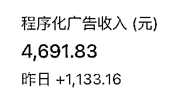
但是在赚到这笔钱之后，账号就开始半死不活的状态。同时这个期间我的账号增加到了5个，但都没赚到什么钱。
这期间我一直认为是自己用AI输出的文章质量不够，所以一直在调试指令，想生成更高质量的文章。
可结果却背道而驰，不光达不到之前的爆文标准，反而一篇爆文都没有再出现过。
我就觉得，肯定是哪里出了问题，是自己没掌握到这个项目的核心。
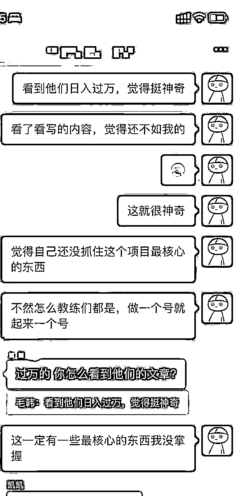
既然我不懂，那就再找个懂得人问问。
这一次，找到了圈友@不二 。当时和不二是做流量主业务联系上的，加上好友后发现5年前我们已经有过交易，于是通过聊天后，发现他也在做这个项目，索性直接付费咨询。
通过咨询后才发现，领域是比文章内容更重要的因素。
虽然自己在生财见过很多次要做蓝海领域、要选择竞争较小的领域，但在实际工作中还是没有遵循这一原则。
在和不二请教后，我模仿不二开始做小众领域（具体就先保密），一共注册了10个号，其中1个号1个月赚到了5k+，加上之前做的法律号，共收益1w+。
在单账号收益问题搞定后，且我的账号已经增加到了30+个，再自己去做就太浪费时间了。
因为我之前做过3个月程序员，所以想能不能将生成这一步用Python实现。在经历了2天1夜的钻研后，一直没有解决乱码和字数不够的问题，所以就暂时搁置了这个解决方案。
因为在生财也听说并简单了解过RPA，所以直接上手用RPA+GPT网页版做了个自动生成文章的脚本。
同时，因为发布文章也比较费时间，所以找了个兼职帮我发布。
到这个阶段，基本上完成了自动化，但兼职成本又比较高。
此时，单月收益1w+。
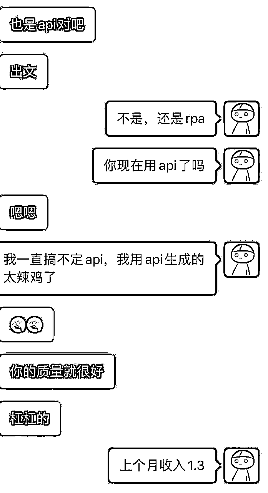
赚钱，就是两件事，提高收益降低成本。
在收益方面，因为每个账号的平均收益都不高，想要再次提升只能靠更多账号批量发布，但是如果增加更多账号，就要增加更多兼职人员，那人员成本又会再次升高。
所以我就选择先优化兼职成本，因为当时用的GPT网页版，总会出现多余的解释词，比如“这是我的输出结果，请指示”。
而这些解释词每次又都不一样，所以只能靠兼职把每篇文章都润色一遍，同时把原文章的图片添加上，所以这一步是无法节省的。
于是我就只做了RPA发布的部分，将兼职成本降低到了每篇文章0.5元
此时我的脚本流程是：
同时，我又写了个RPA，将生成的文章在公众号发布后，同步发到头条号和百家号上，一份成本多份收益。这个操作为我赚了3k，但也让我之后后悔。
此时，我的账号数量来到了100+左右，不仅兼职成本大大提高，而且用GPT网页版生成文章速度太慢，还有每小时45次对话的限制，如果RPA脚本发生一点故障而我没有及时发现解决的话，那么当天的文章就生成不完了。
所以我又再次想起Python直接对接OpenAI的API生成文章这件事，想着手给解决掉。
花了一天时间还是没能解决，于是不断地找懂得人问。发红包找圈友、去淘宝和闲鱼找有过相关经验的程序员，统统都没解决。
直到偶然一次，我把发给GPT的指令参数温度给改了一下，发现竟然可以不出乱码且能一次成文了。于是经过几天时间的通宵，把生成脚本成功搞定。
同时，在写Python代码时，和@阿泽 在群里聊，他问：软件能不能做到自动插入原文章的图片到文章内？
于是我顺着这个想法试了试，果然可以。
到这个阶段，我已经把兼职给解放了，实现了全自动化Python生成文章+RPA发布。
自动化流程为：
并且，可以实现在飞书实时调整参数、脚本实时更新
此时，我的账号数量达到150+。在此之前，我用的爆文素材全是易撰上的爆文。
但是易撰上只收录的很少一部分的数据，所以在我账号数量增加后，上面的文章素材量已经不够用了。
于是我就请教了@不二 的做法，去头条上寻找对标账号，并做到自动监控和筛选。
因为我之前主业是做用户增长、有数据分析的习惯，所以在项目初期就会搭建好数据体系。
经过分析后发现，80%的爆文都来自于采集头条的文章，而非易撰或公众号上的。
于是我就把从易撰和公众号获取素材这个功能直接给砍掉了，并在头条上手动找了500+个对标账号，用Python实时监控他们的发文，只要满足我的筛选条件就可以成为我的素材。
那段时间一直在思考自己的优势，但只是从人生几十年这个维度去思考，却没有想过在产品上的优势。
有一天突然想，我在做公众号上有什么优势呢？
在和更多做公众号矩阵的圈友沟通后，发现我的玩法中，生成和发布速度是他们无法比拟的。
举个例子：
我的整体发布流程是：
其他人的发布流程有的是：
还有的是加了人工润色：
如果说我的优势是对标账号的素材来源不同，那这种信息差其实很好弥补；
如果说我的优势是无需人工润色发布，那更多人采用的都是全自动模式；
所以我就想，我的优势究竟是什么？
后来有一次在进行数据分析时发现，我的很多10w+、100w+都是社会热点类的文章。
我就猜测，是因为热点类的比较吃时效，大多数矩阵操作的很少做这种实时性的领域因为他们都是手动导入素材链接，导入慢了文章就废了、而大多数能够实时监控对标文章的公司又常用人工润色发布，发布时间很慢；所以刚好让我钻了空子。
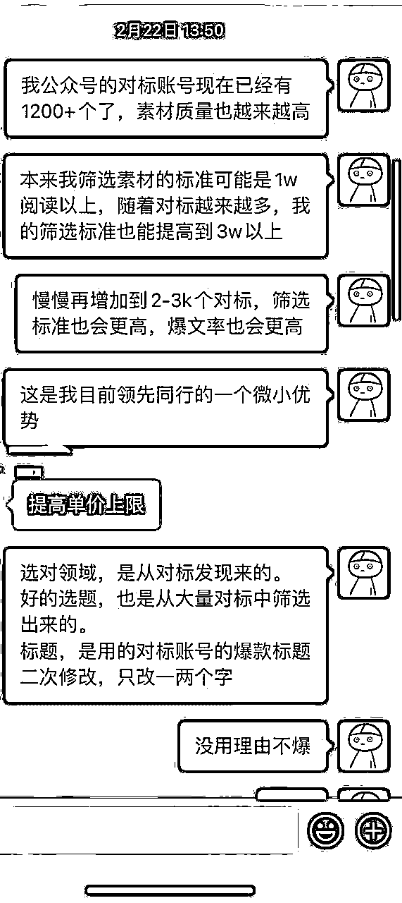
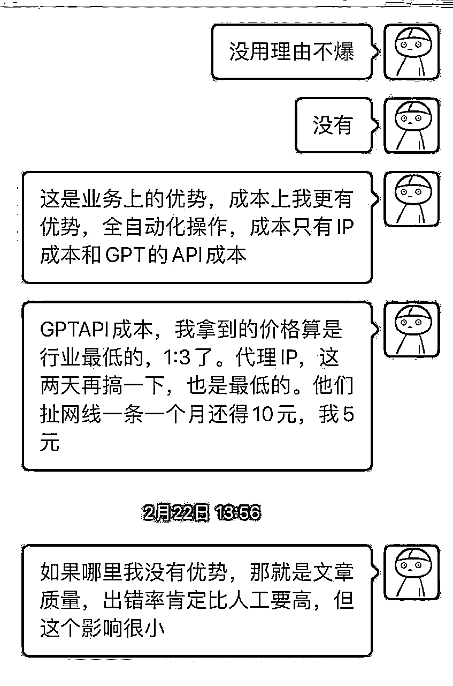
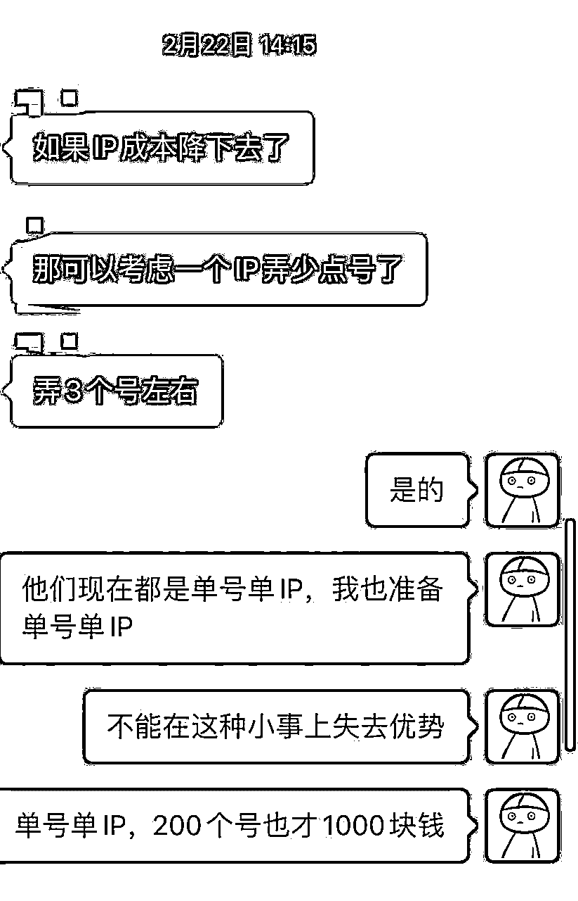
于是，我就尝试将这个优势再次放大。
至此，利用这一优势，我的账号领域从非实时性占比多数，转到了社会热点、科技资讯、汽车资讯、体育资讯等这种实时性较强的领域。
有次分析对标账号时，发现有些对标账号会在同一天发布多次文章，并且文章都会爆。（类似前段时间@燕子职场30 这个号的做法，一天发布很多篇文章）
于是我也在代码中增加了相应的功能，最高时单号一天发120篇文章，并且增加了检测前一日收益，自动修改当天发布次数和发布篇数的功能。（因为有的领域是每次发布2篇比较好，有的每次发布8篇比较好）
这个功能实现后，收益又急速上升，当月收益13w+。
有次RPA发布脚本出现Bug，将同一篇文章在同一个账号上发了7次，第二天我看数据时发现7次中，有3次都破10w阅读，当天这个号赚了1.1w的收益。
于是连夜增加了爆文重发功能，这个功能后来为我多赚了5w元左右。
从2月份开始，这个项目我没有再进行迭代，直到4月份，因为要搬家的缘故，有大半个月没有关注公众号，收益开始大幅下滑。
同时在和一些朋友聊天过程中得知，大家的收益都开始下滑，到现在五月份，收益已经微乎其微了，只是能覆盖住成本。
所以在没有其他玩法之前，我目前已经将这个项目暂停了。
走走停停，算下来从去年参加航海开始到现在，一共赚了37w毛利，如果除去各项成本开支，净利润应该在30w左右。
但因为我着实不爱炫截图，所以只能找到为数不多的几张发给朋友的截图。
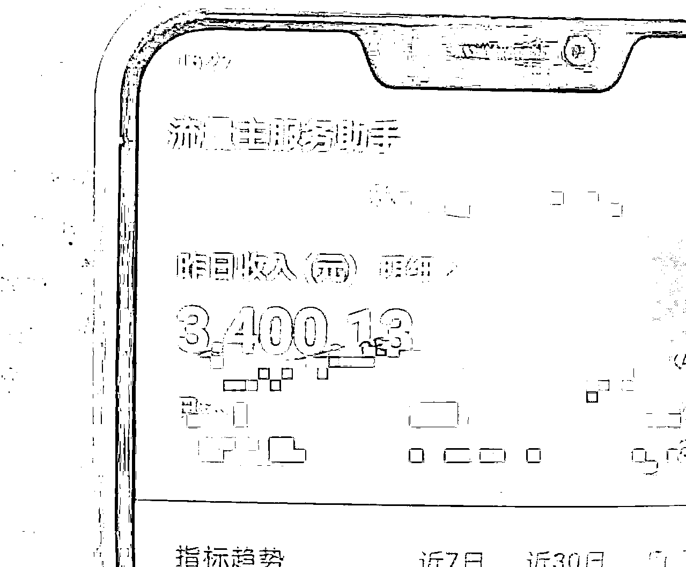
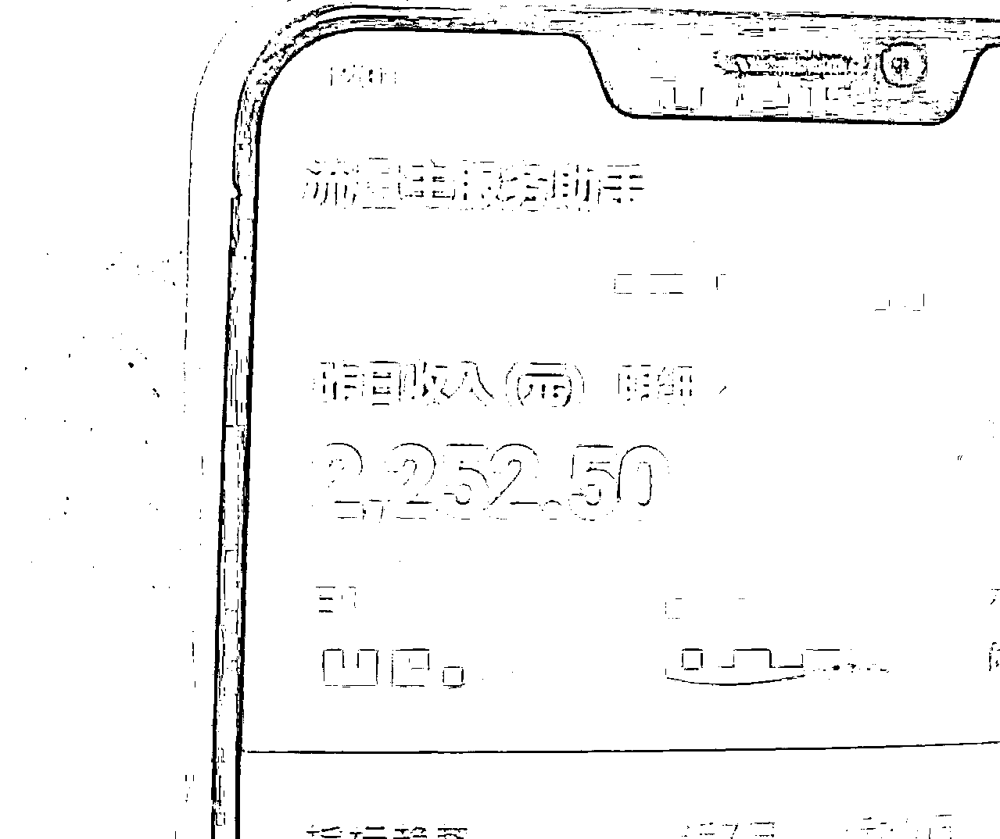
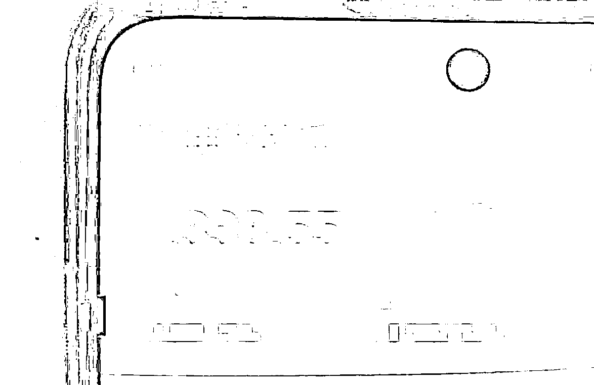
在@阿泽 的分享中已经提到过，我们使用的账号全都是公司和个体户。每个公司可注册50个号、每个个体户可以注册2个号。
如果想注册100个号，全用个体户和公司号的话，仅仅需要：
具体规则是：
指纹浏览器用的免费的「悦互联浏览器」，因为其他指纹浏览器性价比较低或有太多限制
代理IP本来我用的「悦互联浏览器」自带的IP（48/月），后来向@猫哥 请教后，使用天翼云多IP搭建，每个IP成本降低到2元
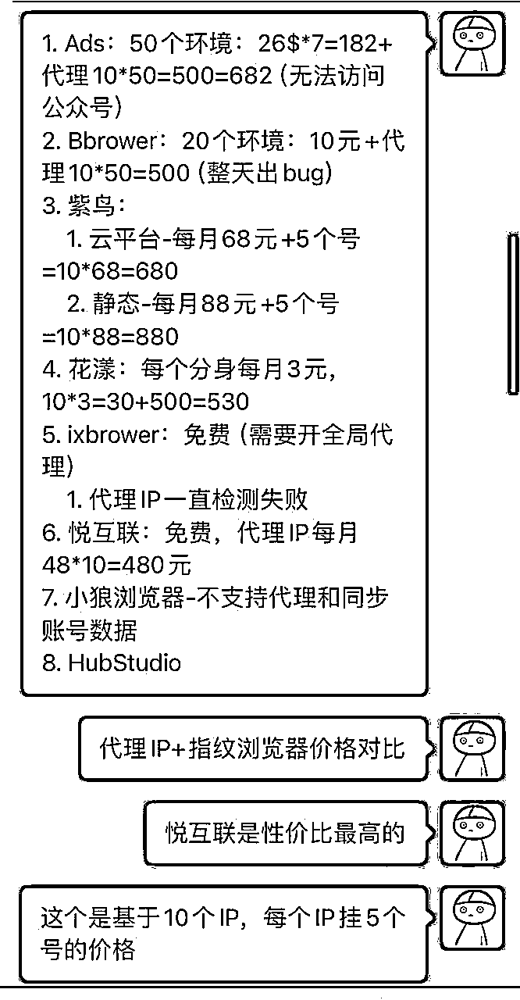
软件一共分为几个部分：Python、影刀RPA、飞书
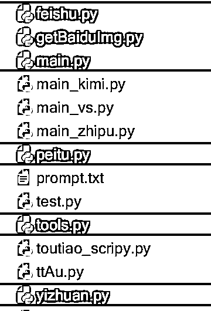
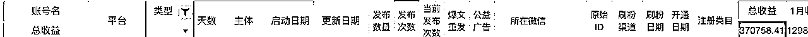
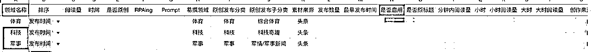
功能如下：
另外，因为脚本是自己给自己写的，所以在脚本中许多参数都是我的飞书文档或其他资料的参数，暂时没有将其全部解耦。如有需要可联系我，人多的话我就解耦后分享出来
这次项目，虽然确实获得了一些成绩，但其实中间有很多次机会没有把握住。
因为我后面做的领域都是自己测试出来的，所以像科技数码、体育、汽车类，这三个领域在我开始做的时候，几乎一周内就能起飞，新号半个月收入过3k属于正常。
但是因为我执着于长期发展，总会拿出手里二三十个号去测试新领域，同时又因为一些其他领域还能赚点小钱，就舍不得注销再换，因此少赚了不少钱。
以后如果跑通一个切口，一定要深入进去，把红利吃透。
上文中我提到，当时将公众号发过的文章同步到头条百家，一个月得了3k的收益。但后面因为违规较多，我用的5个头条号全都被封。
后来，我又用公司号注册了MCN，想通过买号来实现多收益。但MCN想开通统一提现需要先满足「头条首发」且单周阅读量超几百万才能开通。
因为当时公众号收益挺不少，所以没有将头条当成一回事，追悔莫及。
在去年刚做公众号时，我在小群里和朋友们分享说，可以将流量引流到微信，进行二次变现。
而直到今年2月份，我才真的去做这件事，但是也没有好好做。
只是引流了20个左右的创业粉，我收了一些钱带他做公众号，但是他也没有赚到钱，已经把钱退了。
另外引流了一百多个汽车粉，变现方式是9.9进汽车交流群，没有一个人付费。
其实上面这些引流方式已经可以了，只是我的变现方式有问题，但是因为自己没有将其看的太重要，所以没有持续做下去 。
在项目放大，要搞定更多账号时，因为了解到其他圈友都是找学生帮忙注册个人号，一方面这样成本更低，另一方面个人号权重比企业号要高许多。
当时有几个圈友做校园业务的，本想和他们聊聊谈合作来着。
但因为我自己对社交和谈合作这件事的恐惧，选择了用个体户号注册，从而付出了更多的成本、也收到了更低的收益，同时也错失了一次链接校园团队的机会。
在写到这里时，其实我对公众号项目其实依旧不死心。
因为之前看到亦仁说，平台红利会持续很久，现在只是玩法过时了，我们需要寻找新的玩法，更符合平台规则的玩法。而我自己也想一直留在牌桌上，尝试着穿越整个红利周期，看看未来会如何发展，这对以后做其他项目都有很大的好处。
据目前情况来看，内容质量成为了平台的主要关注点，所以依旧使用AI产出文章，那能获得的机会也不多。
但如果不使用AI，纯人工去更，就不太适合我们这些玩家继续呆下去。
所以对于公众号，我现在的看法就是，如果可以的话，就尽量利用手里的资源和优势将其再次变现。
比如利用这近200个号，通过关键词霸屏做SEO流量，如果单个关键词跑通后，还可以链接一些圈友，找更多账号来霸屏更大流量的词；
再比如利用这些号和自动发布脚本做带货推广，即使推荐流量给的少，但只要发的文章足够多，比如每天发2000篇带货文章，也要有1w+阅读；
不过话是这样说的，其实上面两个我也都只是测试过。
带货的发的少、没出单。SEO的我测试了一个公众号，开了付费文章，发布2天有10个人付费。
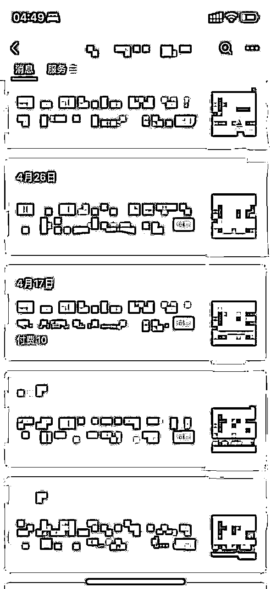
虽然这个确实可以试试，但我目前比较缺钱，在没有比较成熟的解决方案前，就暂时先搁置了。
说完公众号，再说说现在包括未来要做的事吧。
从4月底开始，我开始做教育类知识付费小红书投放，一方面因为付费流量的获取确实是未来必须要掌握的技能，另一方面是因为之前所做的所有项目都不是自己从0开始挖掘的。
所以这次，我从项目挖掘、调研、验证，再到跑通闭环，全部自己来做的，有莫大的成就感。
并且，目前已经实现日盈利500~1000，目测3个月内能实现单月5w~10w的收入。
欢迎做小红书投放和教育类知识付费的圈友找我交流。
以上，便是我这几个月的全部复盘记录。
感谢@妞妞老师 的带入门、感谢@不二 大哥的指导、感谢一众小伙伴这么久以来的交流和支持。
感谢刘小排、盗坤、铭尘、亦仁等各位老师的精神力量。
感谢@阿泽，在今天之前，我本来无意分享这篇文章，但阿泽说，每个人分享的点总有有价值的地方，我思考了一下又觉得，确实应该给过去这段时间一个交代，所以才有了这篇复盘。
最后感谢生财有术团队，这3年在生财学到了太多太多太多无法表达的东西，接下来的一年，争取能进航海家，与更多人为伍。